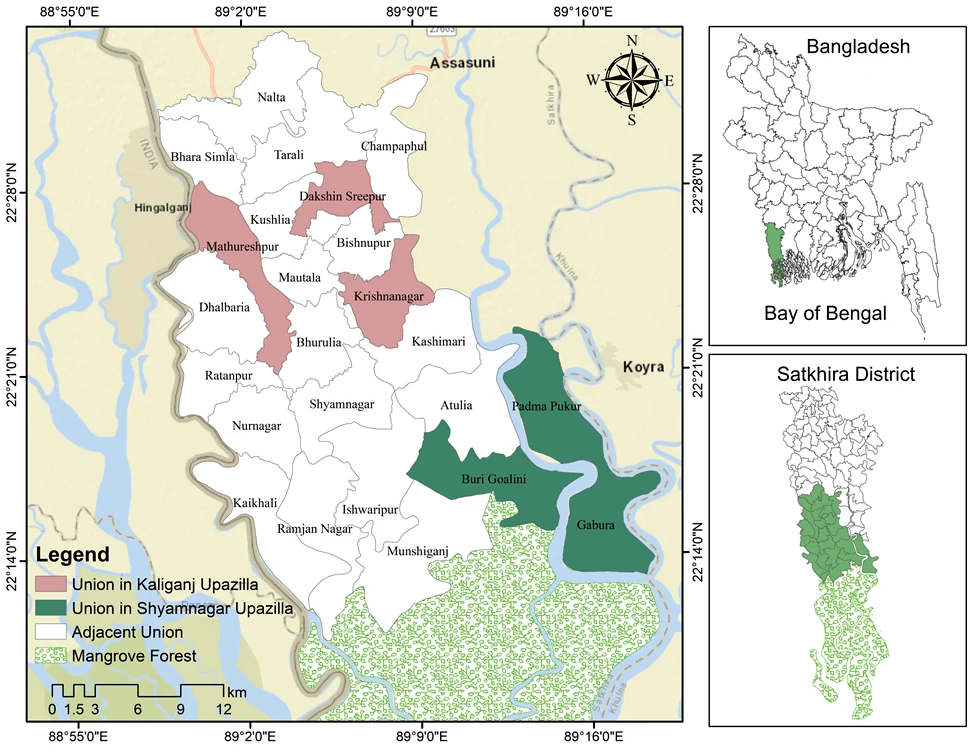
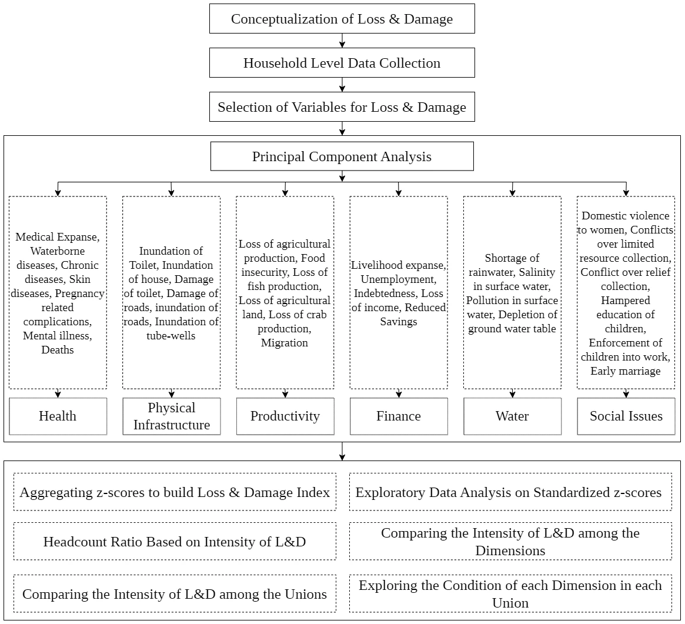
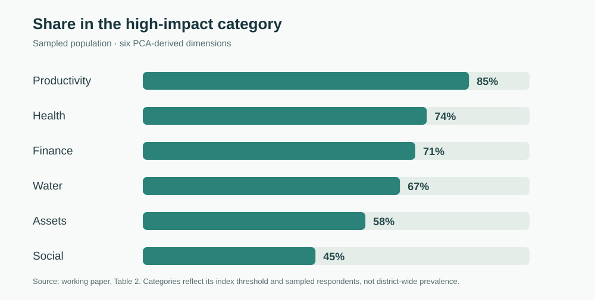
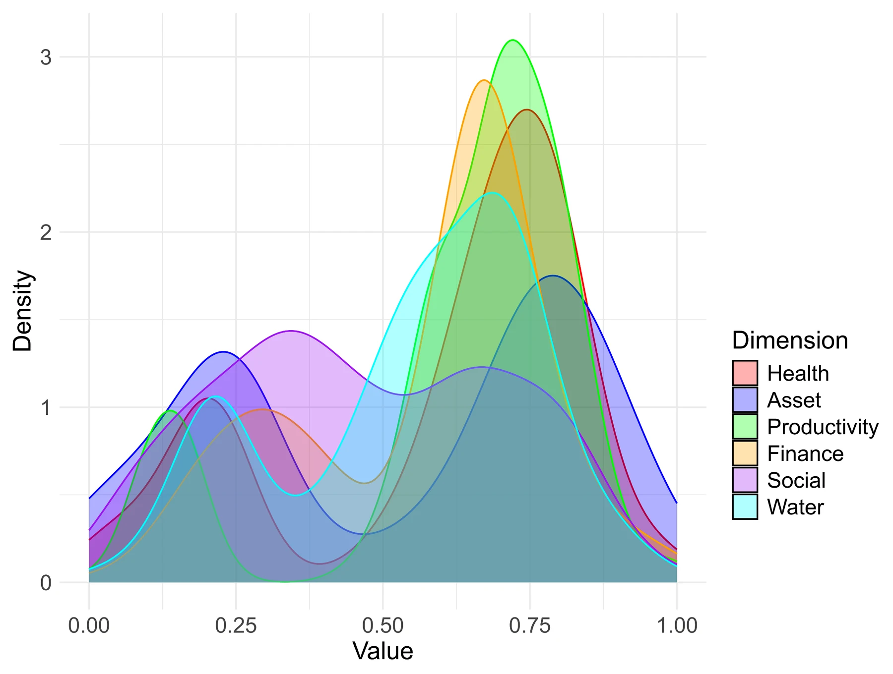
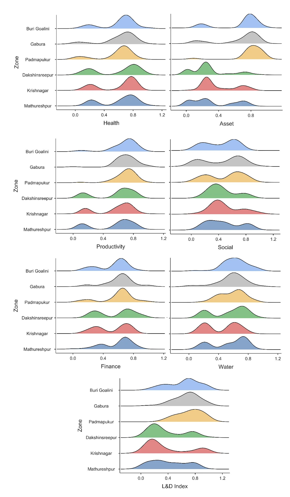

Research question
How do coastal households experience loss and damage from climate-related hazards, and do the reported impacts differ among locations and sectors? We compared health, physical assets, productivity, social conditions, finances and water-related impacts. The study covers six unions in Shyamnagar and Kaliganj upazilas in Satkhira district.
Where the survey took place
The survey covered Buri Goalini, Gabura and Padmapukur in Shyamnagar, and Dakshin Sreepur, Krishnanagar and Mathureshpur in Kaliganj. The original study-area map distinguishes the sampled unions from adjacent areas and the Sundarbans.

View full figure ↗Household indicators and PCA
The working manuscript describes selecting indicators from literature and expert input, reducing them using principal components analysis and Varimax rotation, then constructing a normalized household loss-and-damage index. The study also compares dimensions and unions using non-parametric tests, including Wilcoxon signed-rank and Mann–Whitney U tests.

View full figure ↗What the study found
Productivity-related losses had the largest share of the sampled population above the study’s high-impact threshold. Health and financial impacts were also common. The draft reports higher asset and productivity loss-and-damage scores in the coastal unions of Buri Goalini, Gabura and Padmapukur. These comparisons describe survey responses, not population-wide prevalence or a causal estimate of climate change effects.

View full figure ↗
View full figure ↗
View full figure ↗How to read the findings
The results depend on questionnaire responses, the study’s index construction and its chosen high-impact threshold. This is a cross-sectional sample from six unions, and the results should not be interpreted as representative of every household in Satkhira. The supplied working draft also has a discrepancy in its indicator count and some rounded percentages; this page uses the survey size and the values reported in its results table rather than claiming a reconciled final dataset.
Current submission: Integrating GIS and Multi-Criteria Decision Analysis to Assess Climate Change and Disaster-Induced Loss and Damage in Coastal Bangladesh, under review at Environmental Development (Elsevier). The maps and statistical figures displayed here were prepared for an earlier working draft titled Assessing Climate Change and Disaster Induced Loss and Damage in Coastal Bangladesh Using Multi-criteria Decision Analysis: A Case Study in Satkhira District. The title was subsequently updated; the manuscript has not been reported as accepted.